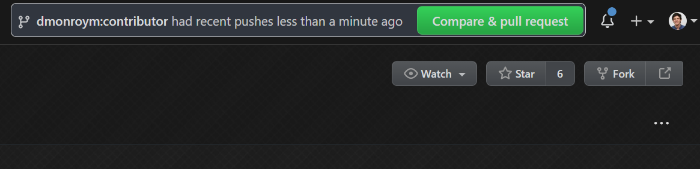

Iniciando
Pré-requisitos
- Visual Studio Code
- Hugo
- Git . Saiba mais sobre Git e GitHub no guia Quickstart .
Links de referência
Vídeos passo a passo (em inglês)
- Workshops de ciclo de desenvolvimento do repositório Github
- Estrutura do repositório Github dos Workshops
Código
A contribuição para este repositório é feita por meio do modelo fork . Os colaboradores enviam alterações para sua própria versão “bifurcada” dos workshops e, em seguida, enviam uma solicitação pull solicitando que essas alterações sejam mescladas.
Para começar:
- Faça o fork do repositório clicando em Fork no canto superior direito:

- No git bash, execute (substituindo [user-name] pelo seu nome de usuário do GitHub):
\> git clone https://github.com/[user-name]/workshops.git
\> cd workshops
\workshops> git remote add upstream https://github.com/NuevoFoundation/workshops.git
\workshops> git remote set-url --push upstream no_push
O último comando evita um push acidental para este repositório sem passar por uma solicitação pull.
Depois de executar acima, git remote -v deve mostrar algo semelhante ao seguinte:
\workshops> git remote -v
origin https://github.com/dmonroym/workshops.git (fetch)
origin https://github.com/dmonroym/workshops.git (push)
upstream https://github.com/NuevoFoundation/workshops.git (fetch)
upstream no_push (push)
Construir e testar
Para construir e testar suas alterações você vai usar hugo. Se você seguiu as instruções de instalação corretas, então hugo deve estar em seu PATH (se não, reinicie sua máquina).
\> cd workshops
\workshops> hugo -D server
Isso gerará algumas informações de compilação, mas a linha mais importante será semelhante a: Web Server is available at //localhost:1313/ (bind address 127.0.0.1) (O servidor Web está disponível em //localhost:1313/ (endereço de ligação 127.0.0.1))
Agora você pode iniciar seu navegador favorito e abrir //localhost:1313/ e deverá ver o site aberto.
Atualizando seu fork
Para se manter atualizado, você deseja manter seu fork atualizado tanto quanto possível. Antes de criar um novo branch, você deve buscar as alterações e enviá-las para o seu fork. Veja como fazer isso (se você precisar de outro branch, use-o em vez do master).
\workshops> git fetch --all --prune
\workshops> git checkout master
\workshops> git merge upstream/master
\workshops> git push origin master
Exemplo de passo a passo
Cenário: vamos fazer uma alteração simples na página de primeiros passos e enviar uma solicitação pull.
Siga as instruções acima
Depois de seguir as instruções do Código acima, você terá uma cópia local do repositório dos workshops.
Crie um ramo de tópico
Certifique-se de que seu fork esteja atualizado antes de fazer isso:
\workshops> git checkout master
\workshops> git checkout -b [branch-name]
\workshops> git push --set-upstream origin [branch-name]
Abra o repositório usando VS Code
Ao iniciar o VS Code, você pode Abrir pasta… Navegue até a pasta do workshop e selecione abrir.
Navegue até o arquivo e modifique-o
Dependendo do que você está modificando, você desejará entender melhor [como o site é construído] (arquitetura do site)
No nosso caso, você deseja modificar este arquivo, então vá para content\brazilian-portuguese\guidelines\getting-started.md Quero simplesmente que você adicione dois pontos de exclamação à palavra “Bem-vindo!”
Antes: Bem-vindo!
Depois: Bem vindo!!!
Confirme a mudança
A execução do git status deve fornecer todas as alterações feitas e todos os nomes dos arquivos. Você desejará prepará-los usando git add e, em seguida, confirmá-los e enviá-los. Aqui estão os comandos para fazer isso.
\workshops> git status
\workshops> git add content/brazilian-portuguese/guidelines/getting-started.md
\workshops> git commit -m "Added exclamations"
\workshops> git push
Algumas dicas do git: Se você quiser adicionar tudo e confirmar ao mesmo tempo, você pode pular todos esses comandos e apenas usar git commit -am "message here" e depois fazer o git push
Crie uma solicitação pull
Parabéns, agora você fez todas as alterações necessárias e a última etapa é revisá-lo e colocá-lo em produção.
Se você navegar até seu fork no github.com, provavelmente verá uma sugestão para criar uma solicitação pull (pull request) com base em seu push mais recente.

Caso contrário, basta navegar até Pull Requests -> Nova pull request
O ponto mais importante aqui é ter certeza de que você está escolhendo corretamente os branches (o base e o head).
Agora você pode clicar no botão Create pull request, fornecer uma descrição e um bom título e aguardar a aprovação de um revisor para que possa ser mesclado.